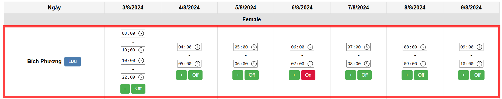
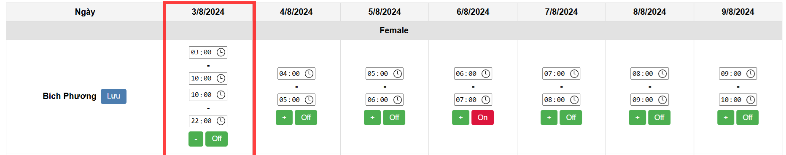
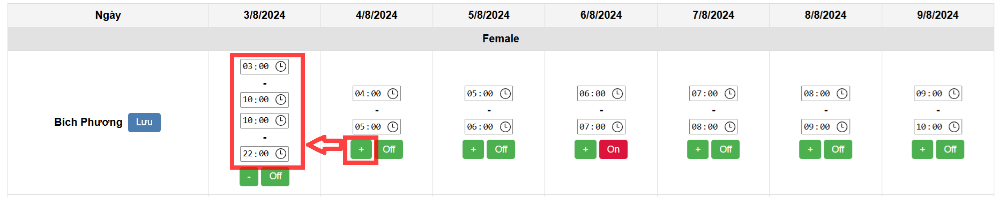
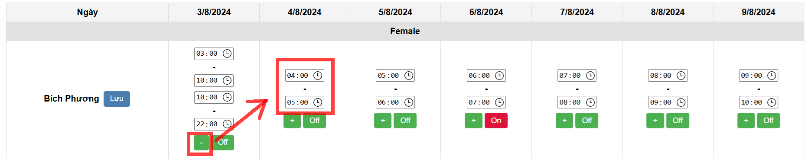
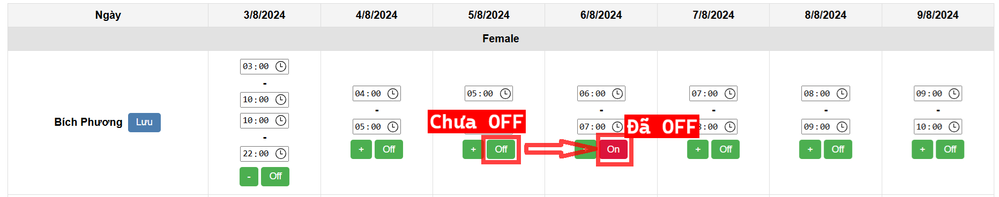
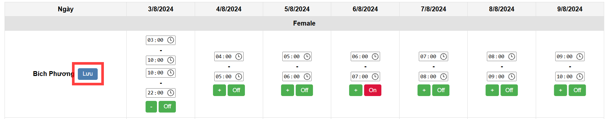

Hàng ngang tương ứng với "tên" là thời gian để đăng ký với các ngày tương ứng với cột "Ngày"
 Nút "+"/"- để thêm hoặc bớt thời gian trong 1 ngày. Ví dụ: từ 7-13h và 17-22h
(Bấm nút này sau khi bấm sẽ tự động lưu và tải lại trang)
 Nút "Off"/"On" để đăng ký ngày off hoặc hủy off
(Bấm nút này sau khi bấm sẽ tự động lưu và tải lại trang)
Sau khi đã chỉnh sửa thời gian, bấm nút "Lưu" ngay sau tên của mình trước khi: tải lại trang, bấm các nút "+", "-", "On", hoặc "Off"
